速览
声音团队交来的效果音和形象不同，或者不太能让游戏爽快时，得设法请他们调整，但其监修指示的方法极其困难：毕竟是声音，没有实体，不是模仿一下声音就能了事。以前讲过的「起音强」等具体表达每次都会用。另外如果是谁都知道的东西，可以打比方，例如「像喷气机的声音」；但不是谁都知道的例子，就不想理所当然地拿来比喻，因为通不过。有时也会指定 YouTube 等上响着相似声音的链接。也因为在远程工作，不太用拟声词指示：比如在邮件里对声音的指定写「哐」「砰」也没用吧？看到这种会想写的人脑中大概在响着声音，但不可能从文字里冒出来，所以尽量避免。但与此相反，声音负责人说：偶尔也有那种拟声表达会有帮助——是介于表达和情绪之间吗？大概是想增加信息、增加线索吧，感到了超越道理的东西。不可思议的是，声音团队常说他们在找樱井脑子里响着的声音做效果音——确实添麻烦了；在脑子里装喇叭「哔」「噗」地放出来也许就好，但没做过那种手术。不过作为导演，他认为即使不符合他想的声音本身，只要扎实地合乎游戏目的，即使形象差很多也会给 OK；实际也有超出想象的好声音。效果音的监修因为暧昧，难的地方很多，但还是得完成；而且这是直接传到玩家手感和触感的地方，要努力接近所求。当然，一开始就有明确的形象是大前提。
1. 声音难以指示 0:03
效果音和形象不同或不够爽快时，得请团队调整，但其监修指示极其困难：毕竟是声音，没有实体，不是模仿一下就能了事。
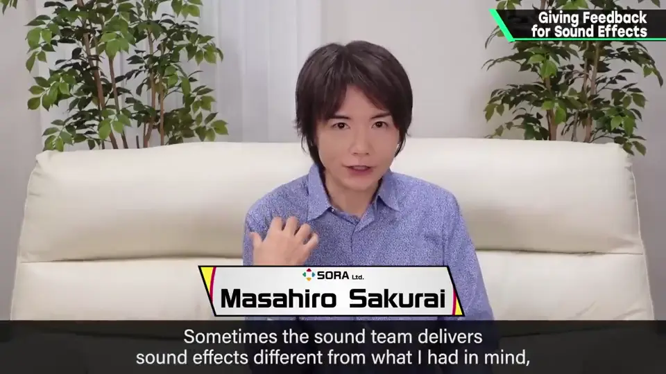
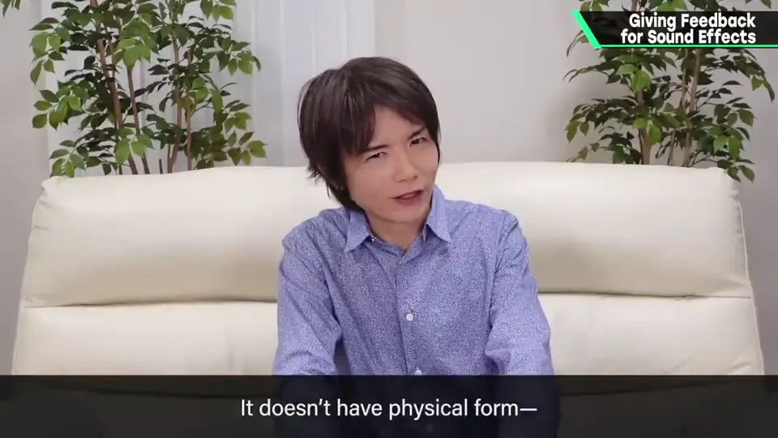
2. 指示的方法 0:26
- 具体表达：例如以前讲过的「起音强」，每次都会用。
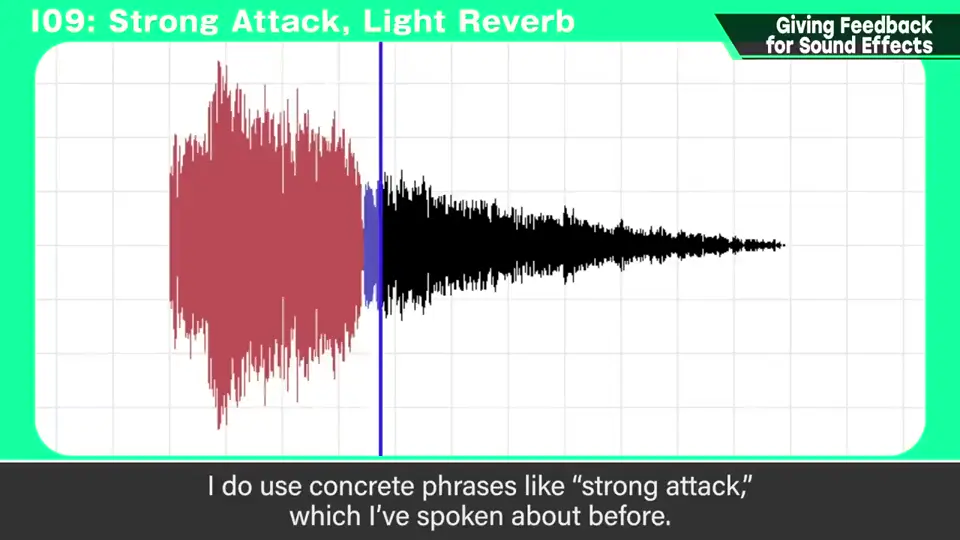
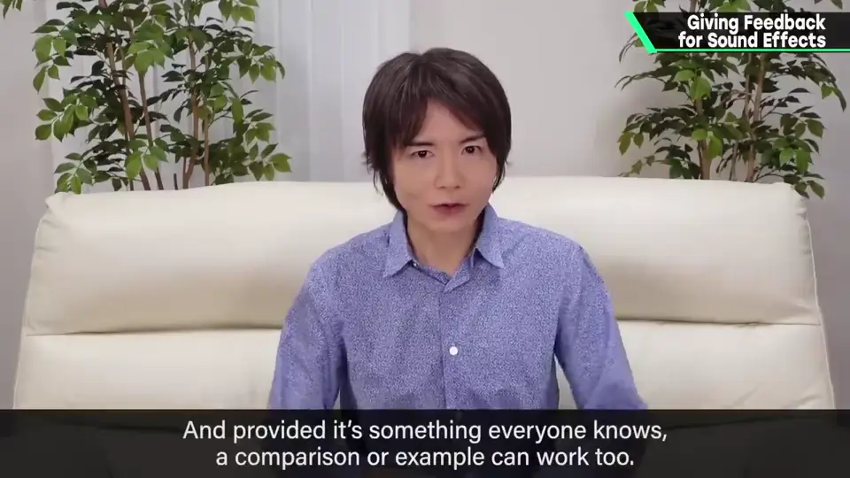
- 谁都知道的东西可以打比方，例如「像喷气机的声音」。
- 不是谁都知道的例子，不要理所当然拿来比喻——通不过。
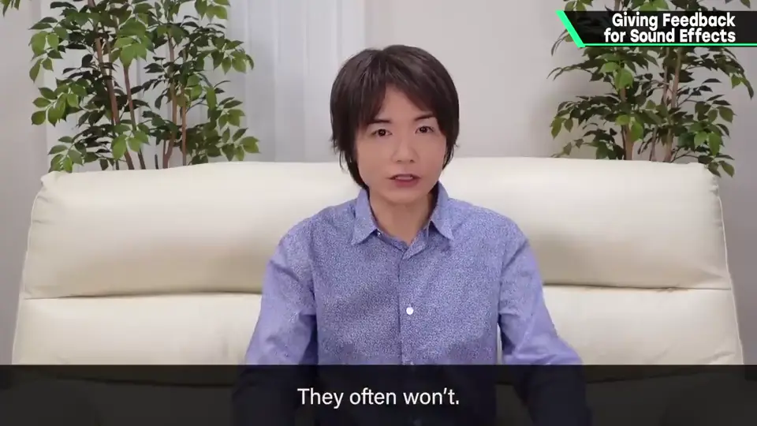
- 有时指定 YouTube 等上响着相似声音的链接。
3. 避免拟声词 1:00
也因为远程工作，不太用拟声词指示：在邮件里写「哐」「砰」也没用吧？
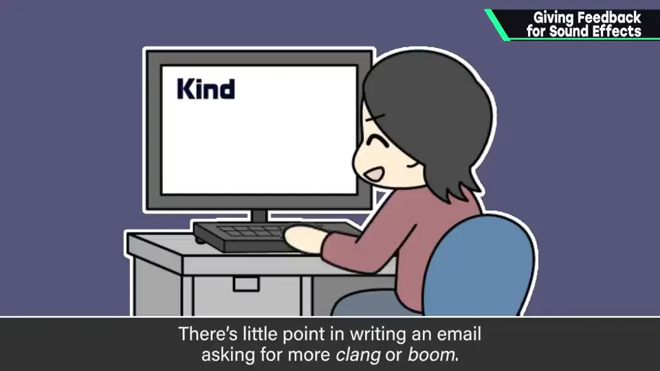
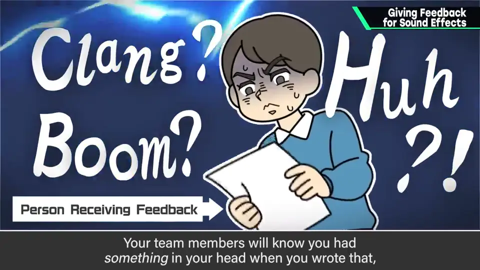
写的人脑中大概在响着声音，但不可能从文字里冒出来，所以尽量避免。
4. 但偶尔有帮助 1:22
声音负责人说：偶尔也有那种拟声表达会有帮助。
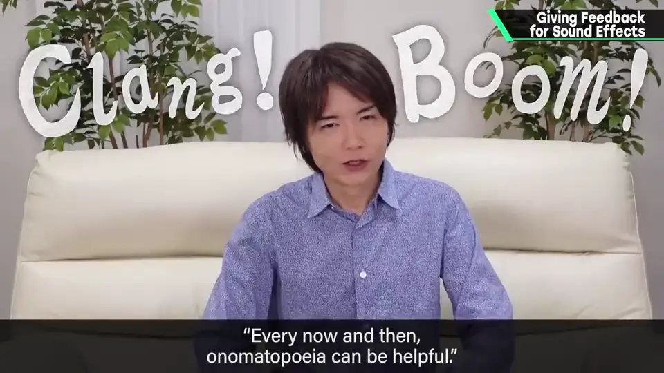
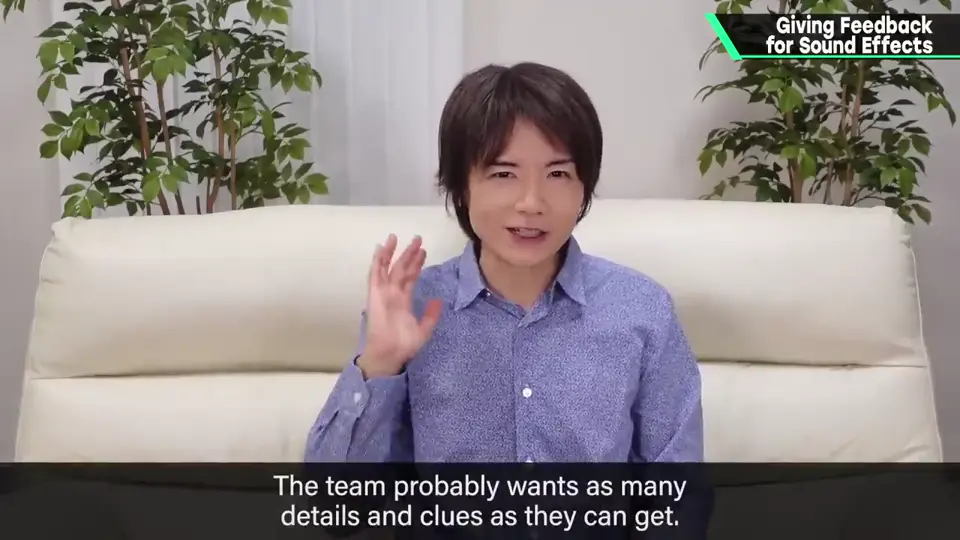
介于表达和情绪之间吧？大概是想增加信息、增加线索——感到了超越道理的东西。
5. 找他脑中的声音 1:46
声音团队常说他们在找樱井脑中响着的声音来做效果音——确实添麻烦了。
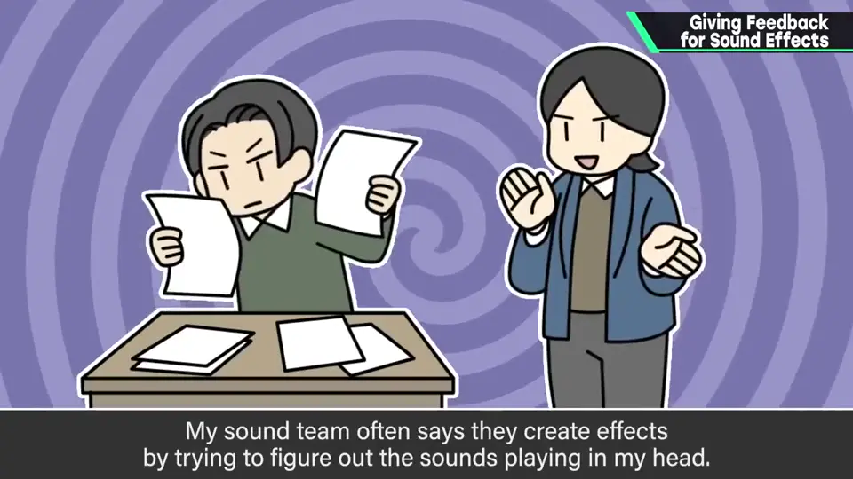
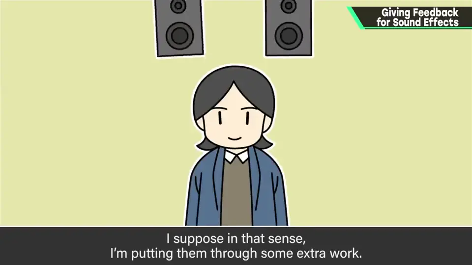
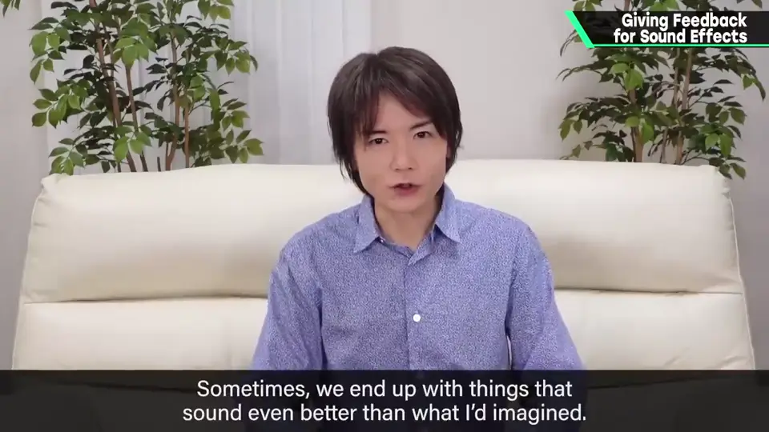
6. 总结 2:25
效果音监修因为暧昧，难的地方很多，但还是得完成；而且这是直接传到玩家手感的地方，要努力接近所求。
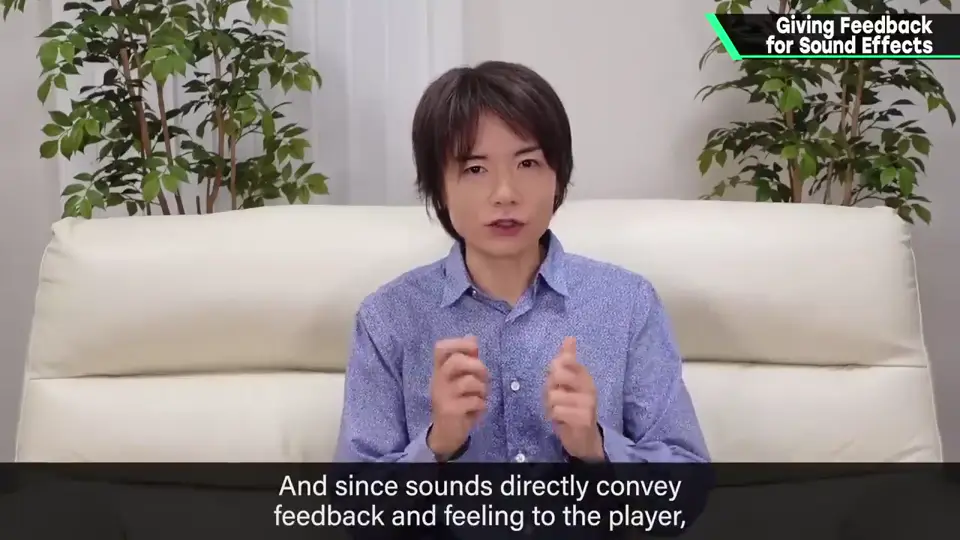
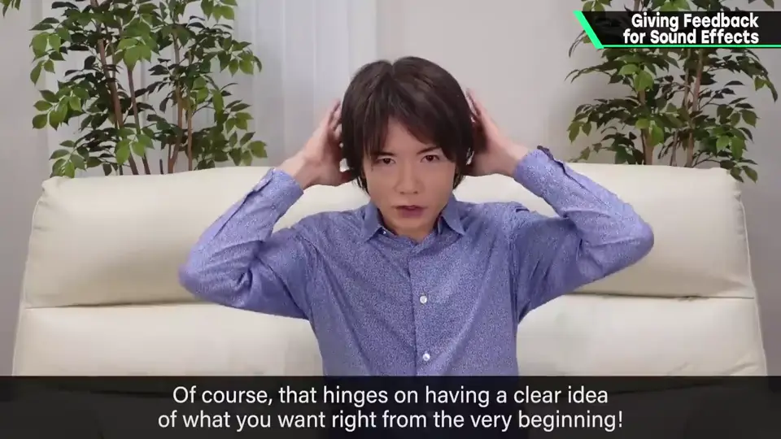
自测题
1. 樱井给效果音下指示的方法有哪些？
具体表达（如起音强）、人人都知道的比喻、相似声音的视频链接。 0:40
2. 为什么尽量避免拟声词？例外是什么？
文字中的拟声词传达不了脑中的声音；但声音负责人说偶尔有拟声词能增加线索。 1:30
3. 什么情况下即使和他想象不同也 OK？
只要扎实地合乎游戏目的。 2:10